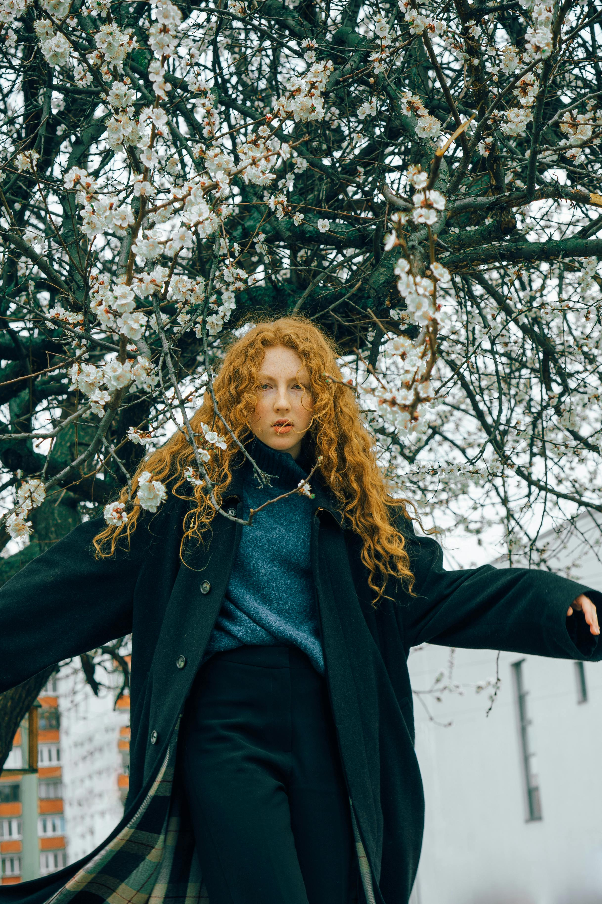
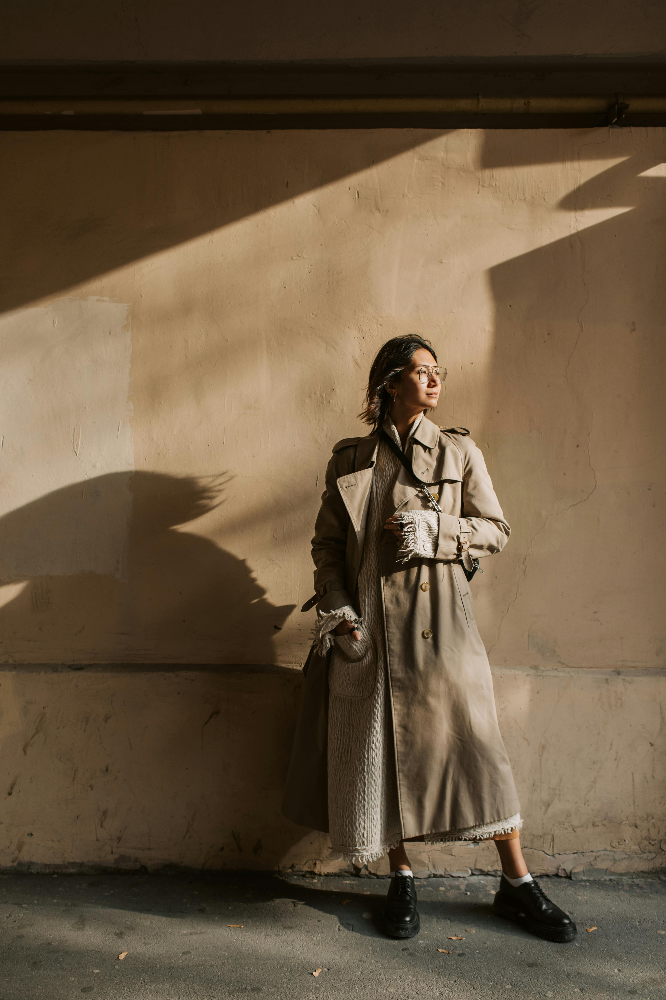

Vår butik är grundad samt bedrivs av våra följande tre designers:
Zara Johansson
Bakgrund: Zara Johansson, delägare av Flux Modehus, är en passionerad designer från Stockholm, Sverige. Hon har alltid haft ett starkt intresse för mode och konst, vilket har drivit henne att följa sin passion inom modeindustrin. Personlighet: Zara är karismatisk och visionär med en djup kärlek för mode och kreativitet. Trots hennes framstående position förblir hon ödmjuk och öppen för nya idéer och samarbeten. Stil och Estetik: Zara har en sofistikerad och avantgardistisk stil som utstrålar självförtroende och individualitet. Hon inspireras av konst, arkitektur och resor, vilket syns i hennes unika och minnesvärda design. Roll på Flux Modehus: Som delägare på Flux Modehus är Zara ansvarig för att leda designprocessen och säkerställa högsta kvalitet och innovation i varje plagg. Mål och Vision: Zaras mål är att fortsätta utveckla Flux Modehus till en ledande kraft inom modeindustrin, samtidigt som hon förblir trogen företagets värderingar av mångfald, kreativitet och kvinnlig styrka. Hon strävar efter att skapa kläder som ger kvinnor en känsla av styrka och självförtroende.
Olivia Andersson
Bakgrund: Olivia Andersson är en driven designer och medgrundare av Flux Modehus. Uppvuxen i Göteborg, Sverige, har Olivia alltid varit fascinerad av mode och konst, vilket ledde henne att följa sin passion och utbilda sig inom modeindustrin. Personlighet: Olivia är energisk och ambitiös med en stark passion för kreativt uttryck. Hon är en innovativ tänkare och strävar alltid efter att skapa unika och minnesvärda designkoncept. Stil och Estetik: Olivia har en eklektisk och experimentell stil som kännetecknas av hennes kärlek till mönster och färg. Hon är känd för att blanda olika texturer och silhuetter för att skapa spännande och dynamiska kläder. Roll på Flux Modehus: Som medgrundare av Flux Modehus är Olivia ansvarig för att driva kreativiteten och innovationen inom företaget. Hon leder designprocessen och arbetar för att säkerställa att varje plagg som produceras av Flux är unikt och originellt. Mål och Vision: Olivias huvudmål är att fortsätta utveckla Flux Modehus till en ledande aktör inom modevärlden. Hon strävar efter att skapa kläder som inte bara är vackra att se på, utan också bär på en känsla av självförtroende och individualitet för dem som bär dem.
Marcus Lindström
Bakgrund: Marcus Lindström är en framstående designer och medgrundare av Flux Modehus. Han växte upp i Malmö, Sverige, och har haft en passion för mode och design sedan ung ålder. Efter att ha studerat mode på universitetet, beslutade Marcus att följa sin dröm och starta sitt eget modehus. Personlighet: Marcus är lugn, metodisk och har en stark känsla för detaljer. Han är en strategisk tänkare och är alltid ute efter att hitta innovativa lösningar för att förbättra Flux Modehus. Stil och Estetik: Marcus har en minimalistisk och tidlös stil som kännetecknas av rena linjer och sofistikerade silhuetter. Han är känd för sitt skarpa öga för proportioner och balans i design. Roll på Flux Modehus: Som medgrundare av Flux Modehus är Marcus ansvarig för affärsutveckling och marknadsföring. Han arbetar även tätt ihop med designteamet för att säkerställa att varje plagg som produceras av Flux är i linje med företagets vision och värderingar. Mål och Vision: Marcus huvudmål är att fortsätta växa Flux Modehus till att bli en internationellt erkänd aktör inom modebranschen. Han strävar efter att skapa en varumärkesidentitet som är synonymt med kvalitet, innovation och tidlös elegans.